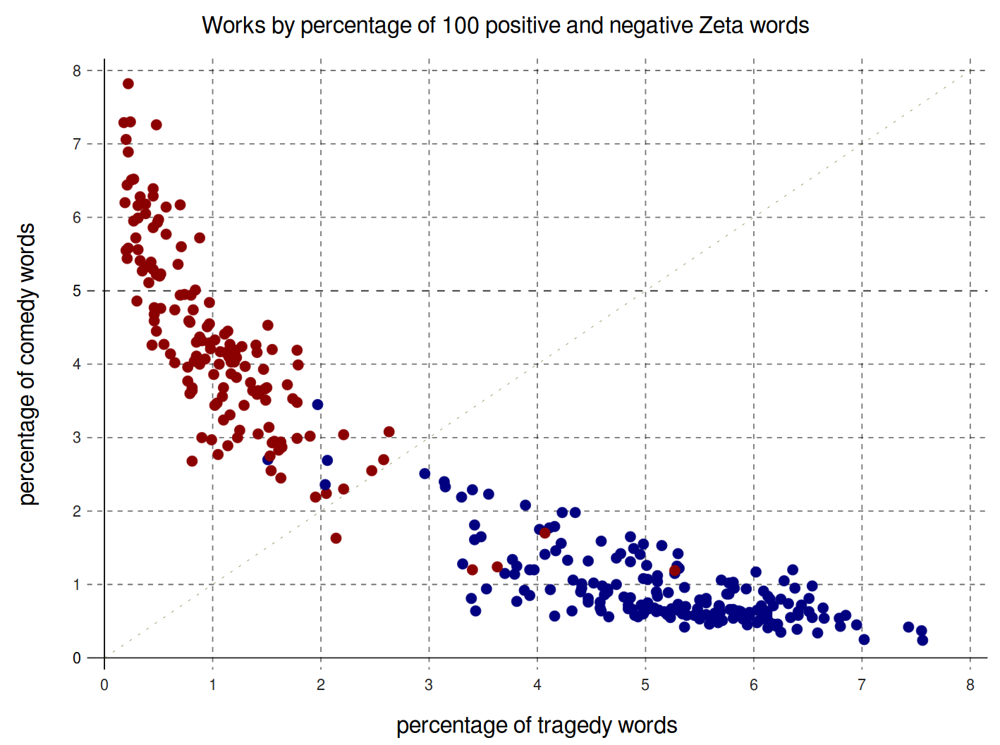
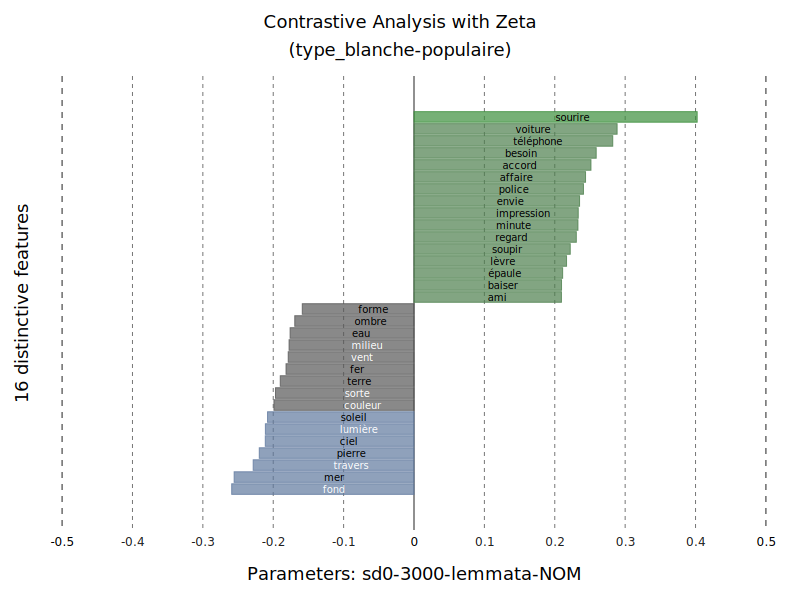
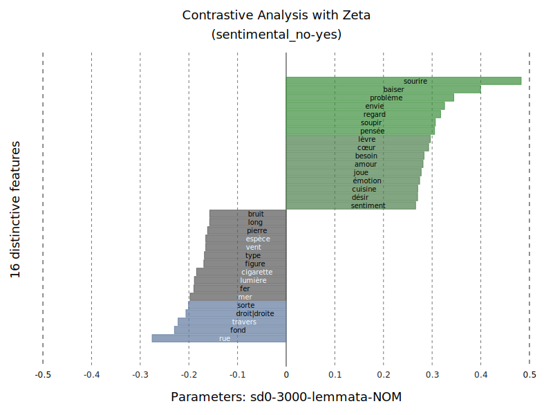
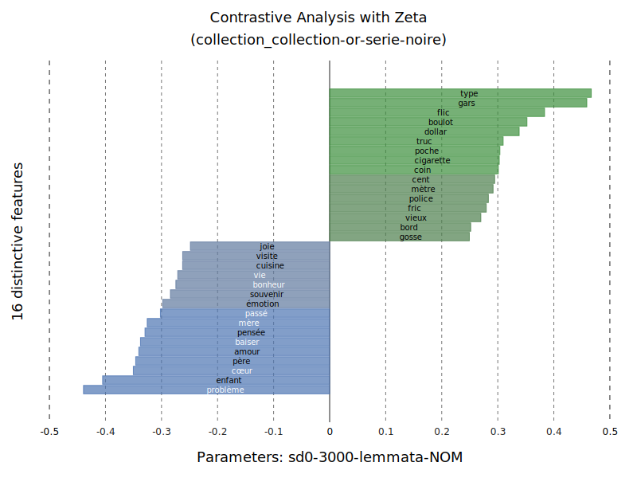
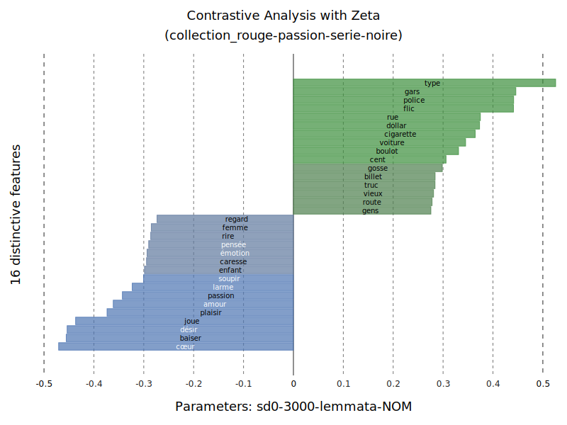
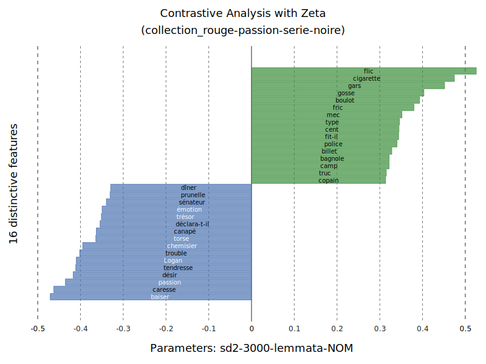
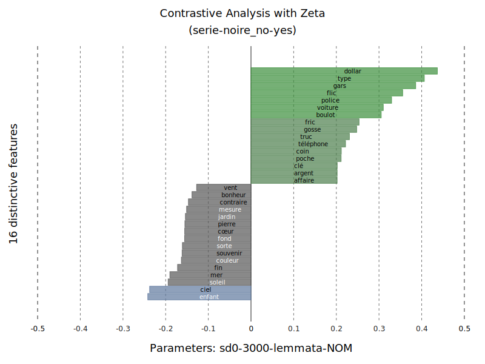
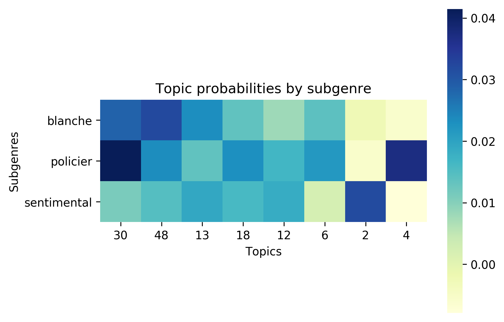

<!doctype html>
<html lang="en">
<head>
<meta charset="utf-8">
<!-- CUSTOMIZE THIS! -->
<title>Distinctiveness</title>
<meta name="author" content="Christof Schöch">
<!-- END -->
<meta name="description" content="Slides">
<meta name="apple-mobile-web-app-capable" content="yes">
<meta name="apple-mobile-web-app-status-bar-style" content="black-translucent">
<meta name="viewport" content="width=device-width, initial-scale=1.0, maximum-scale=1.0, user-scalable=no, minimal-ui">
<link rel="stylesheet" href="css/reveal.css">
<link rel="stylesheet" href="css/theme/simple.css" id="theme">
<!-- Code syntax highlighting -->
<link rel="stylesheet" href="lib/css/zenburn.css">
<!-- Printing and PDF exports -->
<script>
var link = document.createElement( 'link' );
link.rel = 'stylesheet';
link.type = 'text/css';
link.href = window.location.search.match( /print-pdf/gi ) ? 'css/print/pdf.css' : 'css/print/paper.css';
document.getElementsByTagName( 'head' )[0].appendChild( link );
</script>
<!--[if lt IE 9]>
<script src="lib/js/html5shiv.js"></script>
<![endif]-->
</head>

<body>
<div class="reveal">
<div class="slides">
<section data-markdown="" data-separator="^\n---\n" data-separator-vertical="^\n--\n" data-charset="utf-8" data-background-image="img/basics/uni-trier_icon.png" data-background-size="70px" data-background-position="right 10px top 10px">
<script type="text/template">

<!-- THIS IS WHERE THE CONTENT GOES! -->
<!-- Any section element inside of this container is displayed as a slide -->

## Comparison of Text Groups<br/>using Measures of Distinctiveness
<br/>
<hr/>
<br/>Christof Schöch (Univ. of Trier)<br/>with Daniel Schlör, Albin Zehe, Henning Gebhard, Andreas Hotho, Cora Rok, Keli Du, Julia Dudar, Julian Schröter. 
<br/>
<br/>Neo-Latin Studies and Digital Humanities | Bonn, April 14-16, 2021
<hr/>
<br/></img>


---
<br/>

# Overview
<br/>
1. [Introduction: What is distinctiveness?](#/2)
2. [Understanding Zeta](#/3)
3. [Variants and Evaluation](#(4)
4. [Application: French Novel](#(5)
5. [Current Work](#(6)
6. [Conclusion](#(7)


---
<br/>

# 1. Introduction:<br/>What is Distinctiveness?

--
## Foundations
<br/>
* Contrastive / comparative analysis is widespread <!-- .element: class="fragment" data-fragment-index="1" --> 
* Numerous measures of distinctiveness ("keyness") <!-- .element: class="fragment" data-fragment-index="2" -->
* Many tools have implementations <!-- .element: class="fragment" data-fragment-index="3" -->
  * Antconc
  * WordCruncher
  * TXM
  * stylo
  * Intelligent Archive
  * etc.
  
  

--
## An intuition for distinctiveness
</img>

--
## An intuition for distinctiveness
</img>
<br/><br/>
German "Apfelschorle"


--
## What is distinctiveness (conceptually)?
<br/>
Some properties of distinctive features
* they are typical for a group <!-- .element: class="fragment" data-fragment-index="1" --> 
* characteristic of a group <!-- .element: class="fragment" data-fragment-index="2" --> 
* express aboutness <!-- .element: class="fragment" data-fragment-index="3" --> 
* have discriminatory power <!-- .element: class="fragment" data-fragment-index="4" --> 
* would be salient or surprising in the opposite group <!-- .element: class="fragment" data-fragment-index="5" --> 


--
## Log-likelihood in Antconc
</img>


--
## What is distinctiveness (statistically)?
<br/>
* Relies on the comparison of two groups <!-- .element: class="fragment" data-fragment-index="1" --> 
* Calculates a score for each feature <!-- .element: class="fragment" data-fragment-index="2" --> 
* Simple frequency is not enough (= typical) <!-- .element: class="fragment" data-fragment-index="3" --> 
* Rather: comparatively high/low frequency (= distinctive) <!-- .element: class="fragment" data-fragment-index="4" --> 
* Not: entirely mutually exclusive (= purely discriminant) <!-- .element: class="fragment" data-fragment-index="5" --> 
* And: not just frequency, but also distribution / dispersion <!-- .element: class="fragment" data-fragment-index="6" --> 


--
## Four types of measures
<br/>
* Based on frequency (e.g. log-likelihood ratio)
* Based on distribution (e.g. t-Test)
* Based on dispersion (e.g. Zeta)
* Based on Machine Learning (e.g. weights from linear SVM)
<br/>
<br/>
<br/>
<br/>
* Recommended readings <!-- .element: class="fragment" data-fragment-index="1" -->
  * Lijffijt et al., "Significance testing of word frequencies in corpora", 2014
  * Gries, "A new approach to (key) keywords analysis", 2021


---
<br/>

# 2. Understanding Zeta


--
## Zeta
<br/>
* A measure of distinctiveness developed in Computational Literary Studies<!-- .element: class="fragment" data-fragment-index="1" -->
* Based on the dispersion of features (rather than pure frequency)<!-- .element: class="fragment" data-fragment-index="2" -->
* Bias towards medium-frequency content words: high interpretability of results <!-- .element: class="fragment" data-fragment-index="3" -->
* Ignored by virtually all relevant work in CL ;-) <!-- .element: class="fragment" data-fragment-index="4" -->


--
## Previous work 
<br/>
* Proposed by John Burrows (2007) in the context of authorship attribution <!-- .element: class="fragment" data-fragment-index="1" -->
* Studies by Hugh Craig (2009), David Hoover (2010), Rizvi (2018) <!-- .element: class="fragment" data-fragment-index="2" -->
* Our work so far: <!-- .element: class="fragment" data-fragment-index="3" -->
  * a Python implementation (pyzeta)
  * an application to literary subgenres (Schöch 2018)
  * an evaluation study (Schöch et al. 2018)
* Currently: "Zeta and Company" <!-- .element: class="fragment" data-fragment-index="4" -->


--
## Zeta and Company
<br/>
* Zeta and Company: Measures of Distinctiveness for Computational Literary Studies (2020-2023); see: https://zeta-project.eu
* Project team: Julia Dudar (CL), Cora Rok (LS), Keli Du (CLS). 
* Part of the DFG Priority Programme Computational Literary Studies (SPP 2207); see: https://dfg-spp-cls.github.io/ 
* Key objective: Model, implement, evaluate, and use of various measures of ‘keyness’ or ‘distinctiveness’ 
* Further characteristics
  * Focus on comparison of text corpora on the lexical level
  * Building bridges between IR, CL and CLS communities


--
## Zeta: Basics
<br/>
* two groups of documents G1 and G2 <!-- .element: class="fragment" data-fragment-index="1" -->
* each document is split into m segments of n words <!-- .element: class="fragment" data-fragment-index="2" -->
* sp_i = segment proportion of word type i <!-- .element: class="fragment" data-fragment-index="3" -->
* segment proportion: the proportion of segments in one group that contain at least one instance of the word type <!-- .element: class="fragment" data-fragment-index="4" -->
* calculated for G1 and G2 separatedly <!-- .element: class="fragment" data-fragment-index="5" -->

--
## Zeta: Calculation
<br/>
<br/>
**Zeta<sub>i</sub> = sp<sub>i</sub>(G1) - sp<sub>i</sub>(G2)**
<br/>
<br/>
* A simple subtraction of the segment proportions <!-- .element: class="fragment" data-fragment-index="1" -->
* Calculated for each word type, sorted by Zeta <!-- .element: class="fragment" data-fragment-index="2" -->
* Result: list of distinctive words <!-- .element: class="fragment" data-fragment-index="3" -->


--
## Illustration: Tragedies vs comedies
<a href="img/zetascores_comedie-tragedie_30-lemmata.png"></img></a>
<br/><small>Comedy and tragedy words</small>


--
## Proportions of Zeta words
<a href="img/worksbyzeta_subgenre-tragedie-comedie_3000-lemmata-all_100.svg"></img></a>
<br/><small>Each dot is one play</small>


--
## PCA on Zeta: Tragedy, comedy, tragicomedy 
<a href="img/threeway_pca.png"></img></a>
<br/><small>Each dot is one play</small>


--
## Segment proportions and Zeta
<a href="img/typescatter_subgenre-tragedie-comedie_3000-lemmata-all-2000-0.3.svg"></img></a>
<br/><small>Each dot is one word</small>


---
<br/>

# 3. Variants and evaluation

--
## Relevant parameters
<br/>
* Segment size: m words <!-- .element: class="fragment" data-fragment-index="1" -->
* (Sampling method for the segments) <!-- .element: class="fragment" data-fragment-index="2" -->

--
## Possible variants of Zeta
<br/>
* use relative frequencies instead of segment proportions <!-- .element: class="fragment" data-fragment-index="1" -->
* use division instead of subtraction <!-- .element: class="fragment" data-fragment-index="2" -->
* use log-transformed values instead of untransformed values <!-- .element: class="fragment" data-fragment-index="3" -->

--
## Overview of variants
<br/>
<a href="img/variants-labels.png"></img></a>
<br/>sp0 = Burrows Zeta, sp2 = log2-Zeta

--
## Possible desired effects
<br/>
* improve distinctiveness <!-- .element: class="fragment" data-fragment-index="1" -->
* maintain interpretability <!-- .element: class="fragment" data-fragment-index="2" -->


--
## Text collection used
<br/>
* Today: results from a collection of Spanish novels <!-- .element: class="fragment" data-fragment-index="1" --> 
* Date of publication: 1880-1940 <!-- .element: class="fragment" data-fragment-index="2" -->
* 24 novels from Spain, 24 novels from Latin America <!-- .element: class="fragment" data-fragment-index="3" -->
* Source: CLiGS textbox, github.com/cligs/textbox<br/>(Ulrike Henny-Krahmer and José Calvo Tello) <!-- .element: class="fragment" data-fragment-index="4" -->

--
## Methods 
<br/>
* Exploratory<!-- .element: class="fragment" data-fragment-index="1" -->
    * plot Zeta data, varying parameters and variants
    * aim: better understanding 
* Performance testing<!-- .element: class="fragment" data-fragment-index="2" -->
    * classification task with varying parameters and variants 
    * aim: find out whether some variants perform better

--
## Exploratory: Zeta and segment size
<a href="img/image3.png"></img></a>


--
## Performance: Classification task
<a href="img/image1.png"></img></a>
<br/>
<small>Zeta variants (rows) and parameters (columns)</small>
<small>Task details: linear SVM classifier using 40 most distinctive words, <br/>three-fold cross-validation; tf-idf Baseline 0.49</small>


---
<br/>

#4. Application: French Contemporary Novel


--
## Data
<br/>
* Corpus of French Contemporary Novel, 1950-2010 (in progress): currently 800 novels; target: ca. 3000 novels
* Today: preliminary results from a collection of 180 novels

--
## Overview of the corpus
<a href="img/roman20.jpg"></img></a>

--
## Research questions
<br/>
* What are words characteristic of low-brow novels (populaire) when compared to high-brow novels (blanche)? <!-- .element: class="fragment" data-fragment-index="1" -->
* What are words characteristic of crime fiction (policier) when compared to non-crime fiction (sentimental)? <!-- .element: class="fragment" data-fragment-index="2" -->
* What are words characteristic of "série noire" novels when compared to other crime fiction? <!-- .element: class="fragment" data-fragment-index="3" -->

--
## blanche vs. populaire
<a href="img/zetabarchart_3000-lemmata-NOM_type_blanche-populaire_16-sd0.svg"></img></a>

--
## sentimental vs. non-sentimental
<a href="img/zetabarchart_3000-lemmata-NOM_sentimental_no-yes_16-sd0.svg"></img></a>


--
## policier vs. sentimental (coll. or)
<a href="img/zetabarchart_3000-lemmata-NOM_collection_collection-or-serie-noire_16-sd0.svg"></img></a>


--
## policier vs. sentimental (passion rouge, sd0)
<a href="img/zetabarchart_3000-lemmata-NOM_collection_rouge-passion-serie-noire_16-sd0.svg"></img></a>

--
## policier vs. sentimental (passion rouge, sd2)
<a href="img/zetabarchart_3000-lemmata-NOM_collection_rouge-passion-serie-noire_16-sd2.svg"></img></a>


--
## série noire vs. other novels (sd2)
<a href="img/zetabarchart_3000-lemmata-NOM_serie-noire_no-yes_16-sd2.svg"></img></a>

--
## série noire vs. other novels (sd0)
<a href="img/zetabarchart_3000-lemmata-NOM_serie-noire_no-yes_16-sd0.svg"></img></a>

--
## série noire vs. autres policiers
<a href="img/zetabarchart_3000-lemmata-NOM_collection_romans-d-aventure-serie-noire_16-sd2.svg"></img></a>

--
## Alternative: Topic Modeling

--
## Subgenres
<a href="img/heatmap_subgenre.png"></img></a>

--
## Collections: Topics
<br/>

|topic 30|topic 4|topic 2|
|:--------:|:-------:|:-------:|
| main œil tête coup bras pied foi jambe fois air visage homme corps sang bouche chose moment voix temps épaule | police affaire inspecteur commissaire mort policier homme enquête bureau femme crime question heure nom chose victime meurtre coup ami personne | main bras œil femme corps lèvre amour désir visage baiser tête cœur cheveu lit nuit bouche doigt épaule joue peau sein |

--
## Collections
<a href="img/heatmap_collection.png"></img></a>

--
## Collections: Topics
<br/>

|topic 9|topic 39|topic 2|
|:--------:|:-------:|:-------:|
| dollar argent type legs coup billet œil air tête foi chose fois banque fille affaire gars besoin flic boulot shérif | père enfant mère fille frère parent famille parents maison maman fil garçon fils sœur femme vie année papa grand-mère école | main bras œil femme corps lèvre amour désir visage baiser tête cœur cheveu lit nuit bouche doigt épaule joue peau sein |


---
<br/>

#5. Current Work


--
### A new benchmark corpus
</img>

* Contemporary French Novel (1950-2000)
* sentimental, crime, science-fiction, "blanche"
* Currently around 400 / 1200 novels
* To be published in "derived formats"


--
### Exploration of dispersion
<br/>

* Comparison of dispersion-based measures <!-- .element: class="fragment" data-fragment-index="1" -->
* Basis: Zeta (subtraction of document proportions) <!-- .element: class="fragment" data-fragment-index="2" -->
* Alternative: 'DPD' (Deviation of proportions distinctiveness; Gries 2008) <!-- .element: class="fragment" data-fragment-index="3" -->
  * Gries' DP: a measure of dispersion
  * subtraction of DP scores from each other

--
### Results of the comparison (statistically)
</img></img>
<br/>

* DPD vs. Zeta scores
* With segmentation (5000 words, left) or with entire novels (right)


--
### Results of the comparison (word-lists)
</img>
<br/>

* science-fiction vs. rest 
* differences in specificity


---
<br/>

#Conclusion

--
## Results: Measures
<br/>
* We have gained a more precise understanding of Zeta <!-- .element: class="fragment" data-fragment-index="1" -->
* relation between segment proportions and Zeta (glass ceiling effect) <!-- .element: class="fragment" data-fragment-index="2" -->
* a motivated variant of Zeta: log2-Zeta (better performance and robustness) <!-- .element: class="fragment" data-fragment-index="4" -->
* a new dispersion-based measure: DPD <!-- .element: class="fragment" data-fragment-index="4" -->

--
## Results: Application
<br/>
* New insights into relationship tragedy / comedy / tragicomedy  <!-- .element: class="fragment" data-fragment-index="1" -->
* Subtle differences between variants, with dependence on segment length <!-- .element: class="fragment" data-fragment-index="2" -->


--
## Next steps
<br/>
* Tackle the issue of "interpretability": what is it, how can we operationalize it? Is there a trade-off?<!-- .element: class="fragment" data-fragment-index="1" -->
* Systematic evaluation of Zeta and (around a dozen) similar measures<!-- .element: class="fragment" data-fragment-index="2" -->


--
## Many thanks! | References
<small>

* Burrows, John F. (2007). "All the way through: testing for authorship in different frequency strata". _Literary and Linguistic Computing_, 22(1): 27-48.
* Egbert, J., and Biber, D. (2019). “Incorporating text dispersion into keyword analysis”. Corpora, 14(1), 77-104.
* Gries, Stefan, ‘A New Approach to (Key) Keywords Analysis: Using Frequency, and Now Also Dispersion’, Research in Corpus Linguistics, 9 (2021), 1–33 <https://doi.org/10.32714/ricl.09.02.02>
* Hoover, David L. “Teasing out Authorship and Style with T-Tests and Zeta.” In _Digital Humanities Conference_. London, 2010. http://dh2010.cch.kcl.ac.uk/academic-programme/abstracts/papers/html/ab-658.html.
* Lijffijt, Jefrey et al. “Significance Testing of Word Frequencies in Corpora.” _Digital Scholarship in the Humanities_ 31, no. 2 (2014): 374–97. doi:10.1093/llc/fqu064.
* Paquot, M., and Bestgen, Y. (2009). “Distinctive words in academic writing: A comparison of three statistical tests for keyword extraction”. In Corpora: Pragmatics and discourse. Brill Rodopi, 247-269.
* Rayson, Paul, and R. Garside. “Comparing Corpora Using Frequency Profiling.” In _Proceedings of the Workshop on Comparing Corpora_, 1–6. Hong Kong: ACM, 2000.
* Schöch, Christof. „Zeta für die kontrastive Analyse literarischer Texte. Theorie, Implementierung, Fallstudie“, in: _Quantitative Ansätze in den Literatur- und Geisteswissenschaften_, hg. Toni Bernhard et al. Berlin: de Gruyter, 2018.
* Schöch, C., Schlör, D., Zehe, A., Gebhard, H., Becker, M. & Hotho, A. (2018). “Burrows’ Zeta: Exploring and Evaluating Variants and Parameters”. Digital Humanities Conference: Book of Abstracts: 274-277.

<p><br/>With special thanks to pygal and reveal.js</p>


</small>


--
<br/>
<br/>
##Thank you!
<br/>
<br/>
<br/>Slides: <a href="https://christofs.github.io/pyzeta_en/">christofs.github.io/pyzeta_en/</a>
<br/>Code: http://github.com/cligs/pyzeta<br/>
<br/>
<br/>
<hr/>
<p>Christof Schöch, 2019-2021</p>
<p><a href="https://creativecommons.org/licenses/by/4.0/">CC-BY 4.0</a><br/></p>
<hr/>
<br/>
<br/>
</script>
</section>


<!-- DON'T TOUCH UNLESS YOU KNOW WHAT YOU'RE DOING :-) -->
</div>
<script src="lib/js/head.min.js"></script>
<script src="js/reveal.js"></script>
<script>
// Full list of configuration options available at:
// https://github.com/hakimel/reveal.js#configuration
Reveal.initialize({
    controls: true,
    progress: true,
    slideNumber: true,
    history: true,
    center: false,
    transition: 'slide', // none/fade/slide/convex/concave/zoom
    // Optional reveal.js plugins
    dependencies: [
        { src: 'lib/js/classList.js', condition: function() { return !document.body.classList; } },
        { src: 'plugin/markdown/marked.js', condition: function() { return !!document.querySelector( '[data-markdown]' ); } },
        { src: 'plugin/markdown/markdown.js', condition: function() { return !!document.querySelector( '[data-markdown]' ); } },
        { src: 'plugin/highlight/highlight.js', async: true, callback: function() { hljs.initHighlightingOnLoad(); } },
        { src: 'plugin/zoom-js/zoom.js', async: true },
        { src: 'plugin/notes/notes.js', async: true }
        ]
    });
Reveal.configure({ slideNumber: 'c' });
</script>
</body>
</html>
